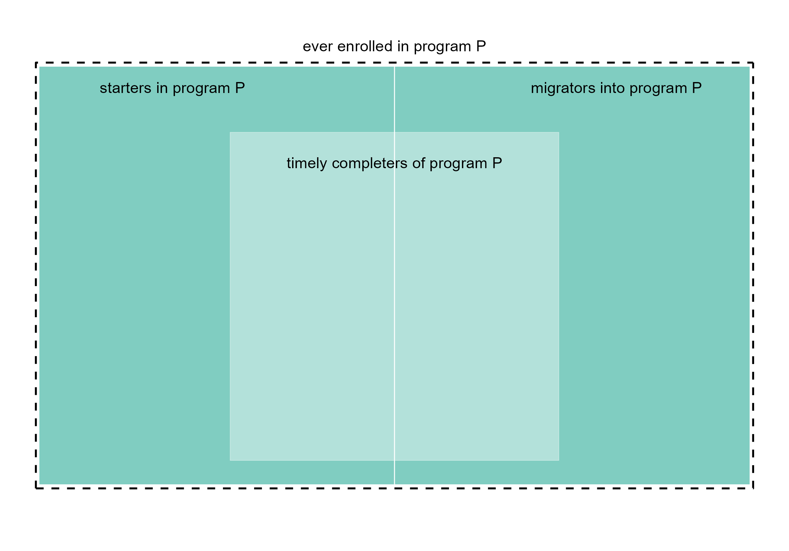
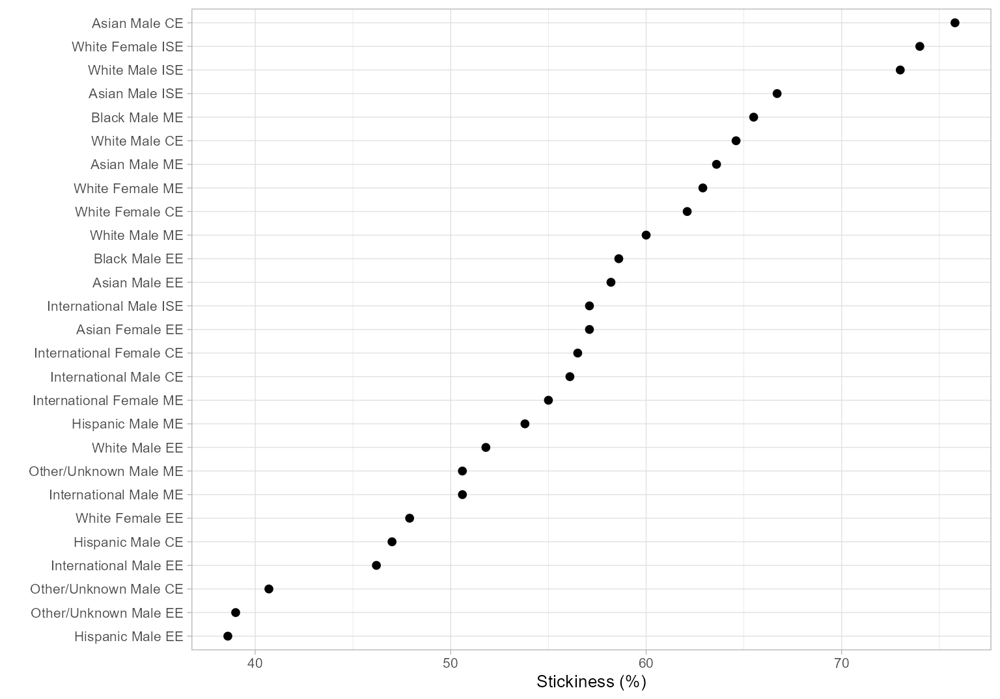

Stickiness is a more-inclusive alternative to graduation rate as a measure of a program’s success in attracting, keeping, and graduating their undergraduates. Students excluded by a conventional graduation rate metric–including migrators—are included in the stickiness metric (Ohland et al., 2012).
An inclusive metric
Program stickiness \small(S) is the ratio of the number of graduates of a program \small(N_g) to the number ever enrolled in the program \small(N_e).
S = \frac{N_g}{N_e}
Stickiness, in comparison to graduation rate, has these characteristics:
Includes migrators, where graduation rate does not.
Is based on the bloc of ever enrolled rather than starters, so there is no need for FYE proxies.
Counts all graduates (timely completers) in a program, eliminating the need to filter graduates based on their starting program.
Like the MIDFIELD definition of graduation rate (in contrast to the IPEDS definition), includes students who attend college part-time, who transfer between institutions, and who start in any term.
As they pertain to the stickiness metric, relationships among starters, migrators, and graduates (timely completers) of a given program P are illustrated in Figure 1.
The overall rectangle represents the stickiness denominator (N_e), the number of students ever enrolled in program P, including starters and migrators.
The interior rectangle represents the stickiness numerator (N_g), the number of graduates (timely completers) of program P.

Figure 1. Stickiness metric. Starters, migrators, and timely completers.
Application
In our Case study, we construct the two major blocs required to calculate stickiness—the numbers of graduates \small(N_g) and ever-enrolled \small(N_e).
Rather than duplicate the complete case, we pick it up at an
intermediate step just before grouping and summarizing. Those data load
with midfieldr as case_blocs.
library("midfieldr")
library("data.table")
DT <- copy(case_blocs)
DT
#> mcid program people bloc
#> <char> <char> <char> <char>
#> 1: MCID3111287755 CE Asian Female ever
#> 2: MCID3111379307 CE Asian Female ever
#> 3: MCID3111394108 CE Asian Female ever
#> ---
#> 8866: MCID3112610409 ME White Male grad
#> 8867: MCID3112618976 ME White Male grad
#> 8868: MCID3112641535 ME White Male gradGroup and summarize
Count the numbers of observations for each combination of the grouping variables. Convert the count from integer to double format.
DT <- DT[, .(N = as.double(.N)), by = c("program", "people", "bloc")]
DT
#> program people bloc N
#> <char> <char> <char> <num>
#> 1: CE Asian Female ever 14
#> 2: CE Asian Male ever 33
#> 3: CE Black Female ever 4
#> ---
#> 96: ME Other/Unknown Male grad 41
#> 97: ME White Female grad 134
#> 98: ME White Male grad 952Reshape
We want to separate the \small N column into two columns—one for the number of graduates and the other for the number of ever enrolled. This operation is known by a number of different names, e.g., pivot, crosstab, unstack, spread, or widen (Mount & Zumel, 2019).
The data.table package uses dcast() for this operation.
The key columns program and people remain in
place. The bloc column yields the new key columns
ever and grad with values taken from the
N column.
DT <- dcast(DT,
program + people ~ bloc,
value.var = "N",
drop = FALSE, # keep all combinations
fill = NA_real_ # NA if no value
)
setkey(DT, NULL)
DT
#> program people ever grad
#> <char> <char> <num> <num>
#> 1: CE Asian Female 14 10
#> 2: CE Asian Male 33 25
#> 3: CE Black Female 4 1
#> 4: CE Black Male 8 5
#> 5: CE Hispanic Female 13 6
#> 6: CE Hispanic Male 66 31
#> 7: CE International Female 23 13
#> 8: CE International Male 98 55
#> 9: CE Native American Female 1 1
#> 10: CE Native American Male 3 1
#> 11: CE Other/Unknown Female 5 3
#> 12: CE Other/Unknown Male 27 11
#> 13: CE White Female 261 162
#> 14: CE White Male 948 612
#> ---
#> 43: ME Asian Female 7 1
#> 44: ME Asian Male 77 49
#> 45: ME Black Female 3 2
#> 46: ME Black Male 29 19
#> 47: ME Hispanic Female 12 8
#> 48: ME Hispanic Male 78 42
#> 49: ME International Female 20 11
#> 50: ME International Male 176 89
#> 51: ME Native American Female NA NA
#> 52: ME Native American Male 5 1
#> 53: ME Other/Unknown Female 8 4
#> 54: ME Other/Unknown Male 81 41
#> 55: ME White Female 213 134
#> 56: ME White Male 1587 952Calculate the metric
Before calculating the metric, we address possible “divide by zero”
errors by converting any zero values of ever to NA. Not
required in this case, but included for completeness.
DT[ever == 0, ever := NA_real_]Stickiness is calculated for each combination of program and people.
DT[, stick := round(100 * grad / ever, 1)]
DT
#> Index: <ever>
#> program people ever grad stick
#> <char> <char> <num> <num> <num>
#> 1: CE Asian Female 14 10 71.4
#> 2: CE Asian Male 33 25 75.8
#> 3: CE Black Female 4 1 25.0
#> 4: CE Black Male 8 5 62.5
#> 5: CE Hispanic Female 13 6 46.2
#> 6: CE Hispanic Male 66 31 47.0
#> 7: CE International Female 23 13 56.5
#> 8: CE International Male 98 55 56.1
#> 9: CE Native American Female 1 1 100.0
#> 10: CE Native American Male 3 1 33.3
#> 11: CE Other/Unknown Female 5 3 60.0
#> 12: CE Other/Unknown Male 27 11 40.7
#> 13: CE White Female 261 162 62.1
#> 14: CE White Male 948 612 64.6
#> ---
#> 43: ME Asian Female 7 1 14.3
#> 44: ME Asian Male 77 49 63.6
#> 45: ME Black Female 3 2 66.7
#> 46: ME Black Male 29 19 65.5
#> 47: ME Hispanic Female 12 8 66.7
#> 48: ME Hispanic Male 78 42 53.8
#> 49: ME International Female 20 11 55.0
#> 50: ME International Male 176 89 50.6
#> 51: ME Native American Female NA NA NA
#> 52: ME Native American Male 5 1 20.0
#> 53: ME Other/Unknown Female 8 4 50.0
#> 54: ME Other/Unknown Male 81 41 50.6
#> 55: ME White Female 213 134 62.9
#> 56: ME White Male 1587 952 60.0We plot a subset of the results below for a quick overview of its range and distribution. For charts better designed for making comparisons, see the Case study.
library("ggplot2")
dframe <- DT[grad > 10, group := paste(people, program)]
dframe <- na.omit(dframe)
ggplot(dframe, aes(x = stick, y = reorder(group, stick))) +
geom_point(size = 1.8, na.rm = TRUE) +
labs(x = "Stickiness (%)", y = "") +
theme_light(base_size = 10)
Figure 2: Stickiness overview